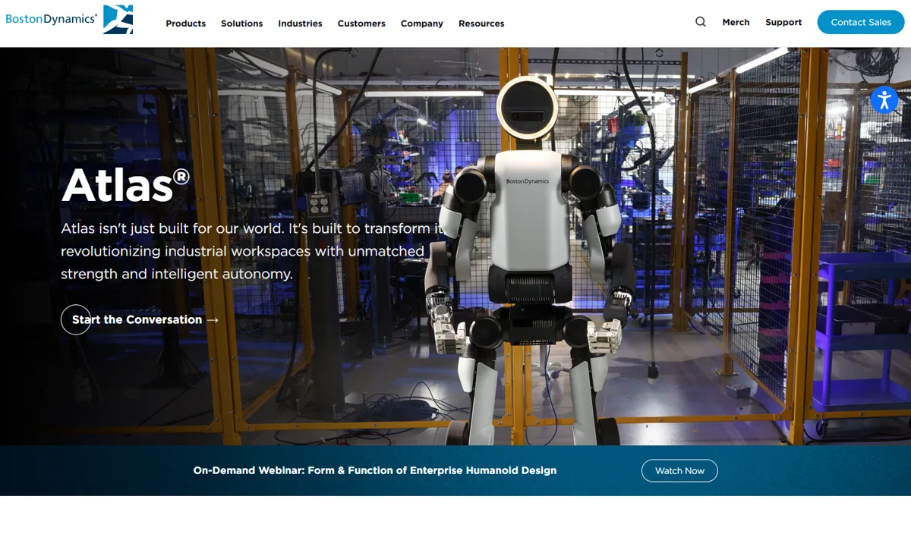
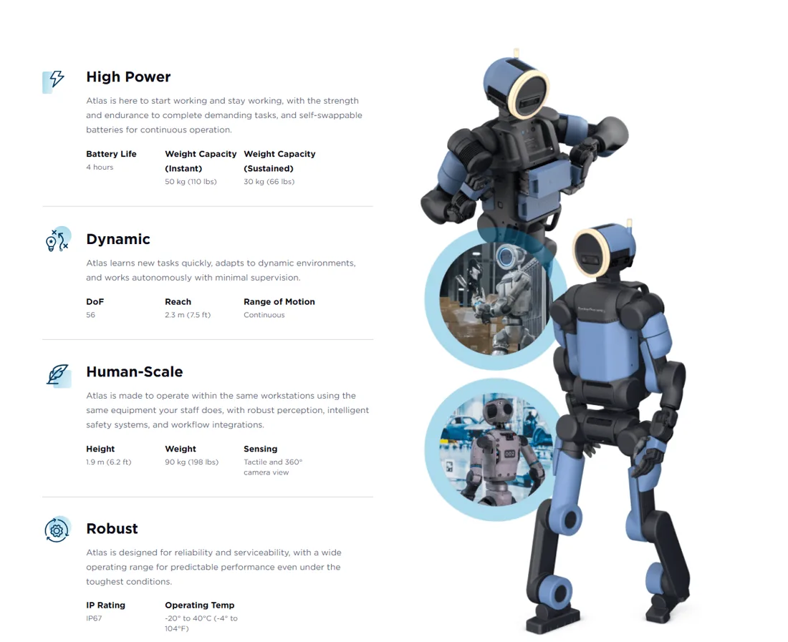
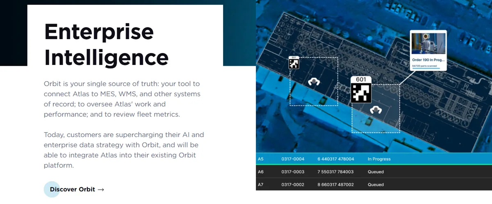

Boston DynamicsBoston Dynamics, Inc.（现代汽车集团全资子公司）
30 多年的足式机器人老牌公司，2021 年起归现代汽车集团：Spot 机器狗与 Stretch 卸货机器人已商用，2026 年把电动 Atlas 做成产品，先供现代工厂，与 Google DeepMind 合作做“大脑”。
一页结论
- 从研究所变成车企的机器人部门：现代集团 2021 年以约 8.8 亿美元买下 80%，2026 年 7 月从软银收回剩余股份，成为唯一股东S7S6
- 唯一一家同时有三款商用机器人的海外公司：Spot（巡检）、Stretch（仓库卸货）已商用；Atlas 产品版 2026-01 在 CES 发布并投产，2026 年产能全部给现代与 Google DeepMindS1S3S4
- 大脑外接 Google：与 Google DeepMind 合作，把 Gemini Robotics 基础模型接入 Atlas；Spot 也接入了 Gemini Robotics-ERS2S10
- 落地节奏慢于宣传：Atlas 在现代佐治亚工厂的 RMAC 中心还处于训练阶段，正式进入产线做零件排序要到 2028 年，对外销售也约 2028 年起S3S6
- 长期亏损、管理层动荡：2022 年至 2025 年三季度累计收入约 3,907 亿韩元，累计亏损约 1.38 万亿韩元；2026 年 CEO、COO、CSO 相继离职，10 月由前 Amazon AGI 负责人 Rohit Prasad 接任 CEOS5S6
01公司介绍
| 项目 | 内容 |
|---|---|
| 公司 | Boston Dynamics, Inc.，1992 年由 Marc Raibert 从 MIT 腿部实验室分拆创立S7 |
| 官网 | bostondynamics.comS1 |
| 总部 | 美国马萨诸塞州沃尔瑟姆S7 |
| 股东变迁 | Google（2013）→ 软银（2017）→ 现代汽车集团（2020-12 签约、2021-06 完成，约 8.8 亿美元买 80%，估值约 11 亿美元）→ 2026-07 现代收回软银剩余股份，成为唯一股东S7S5S6 |
| 管理层 | CEO Robert Playter 2026-02 退休，CFO Amanda McMaster 代理；2026-10-07 Rohit Prasad（前 Amazon Alexa 与 AGI 首席科学家）出任 CEO，是公司第三任 CEOS6 |
| 产品 | Spot 四足机器人、Stretch 仓储卸货机器人、Atlas 人形机器人、Orbit 机队管理软件S1S4 |

02公司战略
核心打法是“背靠现代集团做工厂场景”：现代既是股东、客户、供应商，也是量产工厂。
- 先工厂、再社区、最后家庭：前 CEO Playter 称机器人造价高、需要沿成本曲线下降，工厂是安全且划算的起点，之后才是社区服务和家庭照护S3
- 集团内部消化产能：2026 年 Atlas 产能全部给现代（RMAC 中心）与 Google DeepMind；现代计划 2028 年起把 Atlas 部署到起亚、现代摩比斯、现代 WIA 等工厂，先做零件排序，2030 年左右扩到总装S3S4
- 大脑外部合作：不完全自研基础模型，选择与 Google DeepMind 合作 Gemini RoboticsS2
- 新 CEO 的方向：任命 AI 背景的 Rohit Prasad，公司称看重他把技术突破变成商业成功的经验，并计划 2027 年开始探索其他行业场景S6
03产品定位与产品线
| 产品 | 定位 | 状态 |
|---|---|---|
| Atlas | 官网称“全球首款企业级工业人形机器人”，做物料搬运等重复性工作S1 | 2026-01 投产；2026 年产能已全部分配S3S4 |
| Spot | 四足巡检机器人，读仪表、查泄漏、测温等S10 | 2019 年起商用，客户分布 40 多个国家；起价约 7.45 万美元（第三方报价）S4S11 |
| Stretch | 仓库与物流中心卸货机器人S4 | 2023 年起商用，累计卸货超 2,000 万箱S4 |
| Orbit | 机队管理软件：连接 MES、WMS 等系统，查看机器人工作与机队指标S1 | Spot 已使用，Atlas 将接入S1 |

04主要功能与技术路线

技术路线上，Boston Dynamics 刻意不追求“像人”：官方称圆形头部设计是为了表明它是“工具”，关节可反向旋转以适应狭窄工位（媒体报道）S12。
05解决方案与场景
06商业模式
| 模式 | 说明 |
|---|---|
| 硬件销售 | Spot、Stretch 向企业销售；第三方报价 Spot 起价约 7.45 万美元S11 |
| 软件 | Orbit 机队管理软件（定价未公开）S1 |
| 集团内部订单 | Atlas 前期产能全部供现代集团，计划 2028 年起对外销售S3 |
07上下游供应链与渠道
08主要客户与落地
09营收与财务
| 指标 | 数据 | 口径 |
|---|---|---|
| 累计收入 | 约 3,907 亿韩元（约 2.7 亿美元） | 2022 年至 2025 年三季度S5 |
| 累计亏损 | 约 1.38 万亿韩元（约 9.5 亿美元） | 同期S5 |
| 估值 | 收购时约 11 亿美元；2024 年增资时 2–3 万亿韩元；2026 年媒体估算约 200–280 亿美元 | 韩国媒体基于现代集团披露与分析师估算，非公开市场定价S5S13 |
| IPO | 原收购协议约定 4 年内上市，已推迟；现代称“尚无计划” | S5 |
韩元按 1 美元 ≈ 1,450 韩元粗略换算。
10落地痛点
11近期动态
12潜在风险分析意见
| 风险 | 表现 | 可能程度 |
|---|---|---|
| 单一客户依赖 | Atlas 前期产能和订单几乎全部来自现代集团S3 | 高 |
| 持续亏损 | 累计亏损约为同期收入的 3.5 倍S5 | 高 |
| 管理层与人才 | 一年内换帅，多名高管与骨干离职S6 | 中 |
| 大脑依赖外部 | 核心模型依赖 Google DeepMind，合作条款未公开（分析意见） | 中 |
| 进度落后 | Figure、Tesla 与中国厂商已有更早的规模化交付（分析意见） | 中 |
“可能程度”为基于现有公开信息的判断，不是量化预测。
13综合结论分析意见
优势
- 30 多年运动控制积累
- 三款商用产品与 Orbit 软件
- 现代集团的订单、零部件与工厂
劣势
- 长期亏损
- 管理层动荡
- 基础模型依赖外部
机会
- 集团内 2.5 万台部署
- 2028 年起对外销售
- IPO 融资
威胁
- 中国厂商的价格
- Figure、Tesla 的量产速度
对 AI 产品团队的启示
- “有场景的股东”是最好的冷启动：现代同时是客户、供应商和工厂，解决了人形机器人最难的首批订单问题。
- 企业软件让硬件进入业务系统：Orbit 对接 MES、WMS，把机器人变成工厂系统的一部分，这是交付工业客户的关键。
- 模型可以合作，场景数据要自己握住：大脑交给 DeepMind，但 RMAC 训练数据与工厂真实数据留在集团内。
- 换 AI 背景的 CEO 是信号：行业竞争重心正在从运动能力转向 AI 能力。
信息缺口
以下信息未找到可靠的公开来源，本报告不做推测。
- Atlas 售价与单台成本
- Spot / Stretch 的年销量与收入拆分
- 与 Google DeepMind 合作的商业条款
- Spot 渠道经销商名单
- 2025 年及 2026 年的完整财务数据
来源
A 官方 · B 权威媒体或第三方 · C 社区（仅用于口碑与线索）。访问日期均为 2026-11-02。
- S1 · AAtlas 产品页（规格、Orbit、换电）Boston Dynamics · 2026-11-02 访问
- S2 · ABoston Dynamics 与 Google DeepMind 建立 AI 合作Boston Dynamics · 2026-01-05
- S3 · BBoston Dynamics opens pilot line for up to 1,000 Atlas robots, taps Google Gemini AIKorea JoongAng Daily · 2026-01-06
- S4 · BBoston Dynamics's next-gen humanoid robot will have Google DeepMind DNATechCrunch · 2026-01-05
- S5 · BBoston Dynamics Eyes US IPO as Valuation Soars to $28 BillionSeoul Economic Daily · 2026-01-16
- S6 · BBoston Dynamics hires former Amazon AI leader as CEOManufacturing Dive · 2026-10-07
- S7 · CBoston Dynamics（公司历史）Wikipedia · 2026-11-02 访问
- S8 · AHyundai Mobis Forms Strategic Collaboration Framework with Boston Dynamics现代摩比斯（PR Newswire） · 2026-01
- S9 · BBoston Dynamics in Further Talks Beyond Actuators亚洲经济 · 2026-03-05
- S10 · BGoogle, Boston Dynamics Teach Robot Dog Spot to See, Think, and ActeWeek · 2026-04
- S11 · CHow much does the Boston Dynamics Spot robot cost in 2026?Standard Bots · 2026
- S12 · BThe Alien in the Factory: Boston Dynamics Launches Production-Ready Atlas at CES 2026Humanoids Daily · 2026-01-24
- S13 · BBoston Dynamics valuation jumps 20-fold on humanoid hypeThe Korea Herald · 2026-03-19